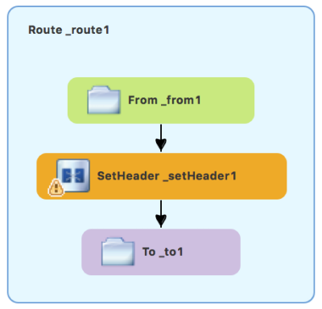
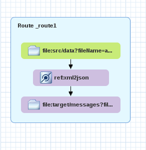

Table of Contents
- Creating a project for the data transformation example
- Adding a data transformation node to the Camel route
- Mapping source data items to target data items
- Creating the transformation test file and running the JUnit test
- Mapping a constant variable to a data item
- Mapping an expression to a data item
- Adding a custom transformation to a mapped data item
- Mapping a simple data item to a data item in a collection
- Adding a built-in function to a mapped data item
- Publishing a Fuse Integration project with data transformation to a Red Hat Fuse server
One of the challenges that comes with system and data integration is that the component systems often work with different data formats. You cannot simply send messages from one system to another without translating it into a format (or language) recognized by the receiving system. Data transformation is the term given to this translation.
In this chapter, you learn how to include data transformation in a predefined Camel route. The Camel route directs messages from a source endpoint that produces XML data to a target endpoint that consumes JSON data. You add and define a data transformation component that maps the source’s XML data format to the target’s JSON data format.
Create a new Fuse Integration Project (select File → New → Fuse Integration Project).
Provide the following information in the wizard:
- Project name: starter
- Deployment platform: Standalone
- Runtime environment: Karaf/Fuse on Karaf
- Camel version: Use the default
- Template: Empty - Blueprint DSL
- Download the prepared data examples from:
https://github.com/FuseByExample/fuse-tooling-tutorials/archive/user-guide-11.1.zip - Extract the
datafolder and the three files that it contains from theuser-guide-11.1.ziparchive into the Fuse Integration project’ssrcdirectory (starter/src/data). - In the Project Explorer view, expand the starter project.
- Double-click Camel Contexts →
src/main/resources/OSGI-INF/blueprint/blueprint.xmlto open the route in the route editor’s Design tab. - Click the Source tab to view the underlying XML.
Replace
<route id="_route1"/>with the following code:<route id="_route1"> <from id="_from1" uri="file:src/data?fileName=abc-order.xml&noop=true"/> <setHeader headerName="approvalID" id="_setHeader1"> <simple>AUTO_OK</simple> </setHeader> <to id="_to1" uri="file:target/messages?fileName=xyz-order.json"/> </route>Click the Design tab to return to the graphical display of the route:

- In the Palette, expand the Transformation drawer.
Click the Data Transformation pattern and then, in the canvas, click the arrow between the
SetHeader _setHeader1andTo_to1nodes.The New Transformation wizard opens with the Dozer File Path field auto-filled.

Fill in the remaining fields:
- In the Transformation ID field, enter
xml2json. - For Source Type, select XML from the drop-down menu.
- For Target Type, select JSON from the drop-down menu.
- In the Transformation ID field, enter
Click Next.
The Source Type (XML) definition page opens, where you specify either an XML Schema (default) or an example XML Instance Document to provide the type definition of the source data:

- Leave XML Schema enabled.
For Source file, browse to the location of the XML schema file or the XML instance file to use for the type definition of the source data, and select it (in this case,
abc-order.xsd).The XML Structure Preview pane displays a preview of the XML structure.
In the Element root field, enter
ABCOrder.The tooling uses this text to label the pane that displays the source data items to map.
The Source Type (XML) definition page should now look like this:

Click Next to open the Target Type (JSON) definition page. This is where you specify the type definition for the target data.

Click JSON Instance Document.
In the Target File field, enter the path to the
xyz-order.jsoninstance document, or browse to it. The JSON Structure Preview pane displays a preview of the JSON data structure:
- Click Finish.
The transformation editor opens. This is where you can map data items in your XML source to data items in your JSON target.

The transformation editor is composed of three panels:
- Source — lists the available data items of the source
- Mappings — displays the mappings between the source and target data items
- Target — lists the available data items of the target
In addition, the editor’s details pane, located just below the editor’s three panels (once the first mapping has been made), graphically displays the hierarchical ancestors for both the mapped source and target data items currently selected. For example:

Using the details pane, you can customize the mapping for the selected source and target data items:
- Set property — Modify an existing mapping or map a simple data item to one in a collection (see Mapping a simple data item to a data item in a collection).
- Set variable — Specify a constant value for a data item (see Mapping a constant variable to a data item).
- Set expression — Map a data item to the dynamic evaluation of a specified expression (see Mapping an expression to a data item).
- Add transformation — Modify the value of a mapped data item using a built-in function (see Adding a built-in function to a mapped data item).
- Add custom transformation — Modify the value of a mapped data item using the Java method you create or one you previously created (see Adding a custom transformation to a mapped data item).
Expand all items in the Source and Target panels located on left and right sides of the Mappings panel.

Drag a data item from the Source panel and drop it on its corresponding data item in the Target panel.
For example, drag the
customerNumdata item from the Source panel and drop it on thecustIddata item in the Target panel.
The mapping appears in the Mappings panel, and the details of both the Source and Target data items appear below in the details pane.
Continue dragging and dropping source data items onto their corresponding target data items until you have completed all basic mappings.
In the
starterexample, the remaining data items to map are:Source Target orderNumorderIdstatuspriorityiditemIdpricecostquantityamount![[Note]](imagesdb/note.png)
Note You can map collections (data items containing lists or sets) to non-collection data items and vice versa, but you cannot map collections to other collections.
Click
 on both the Source and
Target panels to quickly determine whether all data
items have been mapped.
on both the Source and
Target panels to quickly determine whether all data
items have been mapped.
Only data items that have not been mapped are listed in the Source and Target panels.
In the
starterexample, the remaining unmapped Target attributes areapprovalCodeandorigin.Click the blueprint.xml tab to return to the graphical display of the route:
- Click File → Save.
You can run a JUnit test on your transformation file after you create the transformation test. For details, see Creating the transformation test file and running the JUnit test. If you do so at this point, you will see this output in the Console view:
For the source XML data:
<?xml version="1.0" encoding="UTF-8"?>
<ABCOrder xmlns:xsi="http://www.w3.org/2001/XMLSchema-instance" xmlns:java="http://java.sun.com">
<header>
<status>GOLD</status>
<customer-num>ACME-123</customer-num>
<order-num>ORDER1</order-num>
</header>
<order-items>
<item id="PICKLE">
<price>2.25</price>
<quantity>1000</quantity>
</item>
<item id="BANANA">
<price>1.25</price>
<quantity>400</quantity>
</item>
</order-items>
</ABCOrder>For the target JSON data:
{"custId":"ACME-123","priority":"GOLD","orderId":"ORDER1","lineItems":[{"itemId":"PICKLE",
"amount":1000,"cost":2.25},{"itemId":"BANANA","amount":400,"cost":1.25- Right-click the
starterproject in the Project Explorer view, and select New → Other → Fuse Tooling → Fuse Transformation Test. - Select Next to open the New Transformation Test wizard.
In the New Transformation Test wizard, set the following values:
Field Value Package
exampleCamel File Path
OSGI-INF/blueprint/blueprint.xmlTransformation ID
xml2json- Click Finish.
- In the Project Explorer view, navigate to
starter/src/test/java/example, and open theTransformationTest.javafile. Add the following code to the
transformmethod:startEndpoint.sendBodyAndHeader(readFile("src/data/abc-order.xml"), "approvalID", "AUTO_OK");Click File → Save.
You can now run a JUnit test on your transformation file at any point in these tutorials.
- In the Project Explorer view, expand the
starterproject to expose the/src/test/java/example/TransformationTest.javafile. Right click it to open the context menu, and select Run as JUnit Test.
The JUnit Test pane opens to display the status of the test. To avoid cluttering your workspace, drag and drop the pane in the bottom panel near the Console view.

- Open the Console view to see the log output.
When a source/target data item has no corresponding target/source data item, you can map a constant variable to the existing data item.
In the starter example, the target data item
origin does not have a corresponding source data item. To
map the origin attribute to a constant variable:
In the Source panel, click the Variables view.

In the Variables view, click
 to open the Enter a new variable
name dialog.
to open the Enter a new variable
name dialog.
Enter a name for the variable you want to create.
For the
starterexample, enterORIGIN.Click OK.
The newly created variable
ORIGINappears in the Variables view in the Name column and the default valueORIGINin the Value column.- Click the default value to edit it, and change the value to
Web. - Press Enter.
Drag and drop the new variable
ORIGINonto theorigindata item in the Target panel.
The new mapping of the variable
$(ORIGIN)appears in the Mappings panel and in the details pane.Run a JUnit test on your
TransformationTest.javafile. For details, see Creating the transformation test file and running the JUnit test.The Console view displays the JSON-formatted output data:
{"custId":"ACME-123","priority":"GOLD","orderId":"ORDER1","origin":"Web", "approvalCode":"AUTO_OK","lineItems":[{"itemId":"PICKLE","amount":1000,"cost":2.25}, {"itemId":"BANANA","amount":400,"cost":1.25}]}
This feature enables you, for example, to map a target data item to the dynamic evaluation of a Camel language expression.
Use the target approvalCode data item, which lacks a
corresponding source data item:
Click
 to add an empty transformation map to the
Mappings panel.
to add an empty transformation map to the
Mappings panel.
From the Target panel, drag and drop the
approvalCodedata item to the target field of the newly created mapping in the Mappings panel.
The
approvalCodedata item also appears in the details pane’s target box.In the details pane, click on the
ABCOrdersource box to open the drop-down menu.
Menu options depend on the selected data item’s data type. The available options are bolded.
Select Set expression to open the Expression dialog.

In Language, select the expression language to use from the list of those available. Available options depend on the data item’s data type.
For the
starterexample, select Header.In the details pane, select the source of the expression to use.
The options are Value and Script.
For the
starterexample, click Value, and then enterApprovalID.Click OK.

Both the Mappings panel and the details pane display the new mapping for the target data item
approvalCode.Run a JUnit test on your
TransformationTest.javafile. For details, see Creating the transformation test file and running the JUnit test.The Console view displays the JSON-formatted output data:
{"custId":"ACME-123","priority":"GOLD","orderId":"ORDER1","origin":"Web", "approvalCode":"AUTO_OK","lineItems":[{"itemId":"PICKLE","amount":1000,"cost":2.25}, {"itemId":"BANANA","amount":400,"cost":1.25}]}
You may need to modify the formatting of source data items when they do not satisfy the requirements of the target system.
For example, to satisfy the target system’s requirement that all customer IDs be enclosed in brackets:
In the Mappings panel, select the
customerNummapping to populate the details pane.
In the details pane, click on the
ABCOrdersource box to open the drop-down menu.
Select Add custom transformation to open the Add Custom Transformation page.

Click
 next to the Class field to open
the Create a New Java Class wizard.
next to the Class field to open
the Create a New Java Class wizard.
Modify the following fields:
- Package — Enter
example. - Name — Enter
MyCustomMapper. Method Name — Change
maptobrackets.Leave all other fields as is.
- Package — Enter
Click Finish.
The Add Custom Transformation page opens with the Class and Method fields auto filled:

Click OK to open the
MyCustomMapper.javafile in the Java editor:
Edit the
bracketsmethod to change the last linereturn null;to this:return "[" + input + "]";
Click the transformation.xml tab to switch back to the transformation editor.

The details pane shows that the
bracketsmethod has been associated with thecustomerNumdata item.The
bracketsmethod is executed on the source input before it is sent to the target system.Run a JUnit test on your
TransformationTest.javafile. For details, see Creating the transformation test file and running the JUnit test.The Console view displays the JSON-formatted output data:
{"custId":"[ACME-123]","priority":"GOLD","orderId":"ORDER1","origin":"Web", "approvalCode":"AUTO_OK","lineItems":[{"itemId":"PICKLE","amount":1000,"cost":2.25}, {"itemId":"BANANA","amount":400,"cost":1.25}]}
In this tutorial, you will modify an existing mapping that maps all
ids in the Source to the itemIds in
the Target. The new mapping will map the customerNum data item
in the Source to the itemId of the second item in the
lineItems collection in the Target.
With this change, no ids in the Source will be mapped to
itemIds in the Target.
In the Mappings panel, select the mapping
id— >itemIdto display the mapping in the details pane.
On the Source box, click to open the drop-down menu, and select Set property.

In the Select a property page, expand the
headernode and selectcustomerNum. Click OK to save the changes.
The details pane now shows that
XyzOrderhas alineItemsfield. Click the toggle button next tolineItemsto increase its value to1.Note Indexes are zero-based, so a value of
1selects the second instance ofitemIdin the collection.
Notice that the details pane shows
customerNummapped to theitemIdof the second item in thelineItemscollection.Run a JUnit test on your
TransformationTest.javafile. For details, see Creating the transformation test file and running the JUnit test.The Console view displays the JSON-formatted output data:
{"custId":"[ACME-123]","priority":"GOLD","orderId":"ORDER1","origin":"Web", "approvalCode":"AUTO_OK","lineItems":[{"amount":1000,"cost":2.25}, {"itemId":"ACME-123","amount":400,"cost":1.25}]}
You can use the built-in string-related functions to apply transformations to mapped data items.
In the Transformations panel, select the
statustoprioritymapping to populate the details pane.
In the Source box, click to open the drop-down menu, and select Add transformation.

In the Transformations pane, select
append, and in the Arguments pane, enter-levelfor the value of suffix.This
appendfunction adds the specified suffix to the end of thestatusstring before mapping it to the targetprioritydata item.
Click OK.

By default, the details pane displays the results of adding the
appendfunction to thestatusdata item in a user-friendly format. You can change this formatting by clicking the right-most on the Source box, and selecting Show standard formatting.
Run a JUnit test on your
TransformationTest.javafile. For details, see Creating the transformation test file and running the JUnit test.The Console view displays the JSON-formatted output data:
{"custId":"[ACME-123]","priority":"GOLD-level","orderId":"ORDER1","origin":"Web", "approvalCode":"AUTO_OK","lineItems":[{"amount":1000,"cost":2.25},{"itemId":"ACME-123", "amount":400,"cost":1.25}]}
Before you publish your data transformation project to a Fuse server (see Publishing Fuse Integration Projects to a Server), you need to install the following features in the Fuse runtime:
camel-dozercamel-jacksoncamel-jaxb
To install the required features on the Fuse runtime:
- If not already there, switch to the Fuse Integration perspective.
- If necessary, add the Fuse server to the Servers list (see Adding a Server).
- Start the Fuse Server (see Starting a Server), and wait for the JBoss Fuse shell to appear in the Terminal view.
For each of the required
camel-features, at theJBossFuse:admin@root>prompt type:features:install camel-<featureName>Where featureName is one of
dozer,jackson, orjaxb.To verify that each of the features was successfully installed, at the
JBossFuse:admin@root>prompt type:features:list --ordered --installedYou should see the camel features you just installed in the output listing: